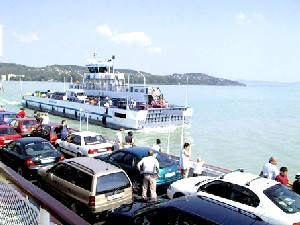

|
|
|
Zamárdi
am Südufer des Plattensees
liegt zwischen
im Osten und dem Fährhafen
von Szántód zur Halbinsel
im Norden. Die Ortschaft erstreckt sich auf einer schmalen Landstreifen
zwischen dem südlich gelegenen Hügelland und dem
Plattensee. |
|
|
 |
Lange
und flache Badestrände kennzeichnen Zamárdi. Das
gepflegte Freibad erstreckt sich auf einer 3 km langen
Ufergelände, der Strand ist besonders familienfreundlich. In
Zamárdi ist das Parken mit dem Auto gebührenfrei
-
im Gegensatz zu vielen Gemeinden am Balaton. |
Die
Ortschaft wurde urkundlich im Jahre 1082 erstmals genannt und
zählt heute 2.200 Einwohner. Da die Türken im 16. Jahrhundert die
ursprüngliche Bevölkerung abgemetzelt und so ausgerottet hatten,
hat die aktuelle Bevölkerung von Zamárdi mit den ursprünglichen
Bewohnern von Zamárdi nichts zu tun.
Hier siedelten einst die Awaren,
die
hier ihre Gräberfelder hinterlassen haben. Von den Awaren
vermutet man seit kurzem, dass sie nach dem Frankenschlag doch
nicht ganz
in der Weltgeschichte versunken waren, wie einst ein badischer Lehrer den Spruch
mit den "Awaren, die mal waren" in die Welt setzte. Die Awaren
sollen nach neuesten Erkenntnissen identisch sein mit dem
Volk der Langobarden, die letztendlich in der Lombardei um Pavia
ansiedelten. Den Beweis
dafür fand man in einer Farbgrube in
der
Ortschaft Lovas nordöstlich von Balaton.
|
In den
Jahren 1593-1596 verwüsteten die Türken
Zamárdi vollständig, sie
haben die gesamte Bevölkerung, Frauen, Alte und
Kinder, restlos abgemetzelt, weil die Steuereinnahmen aus Zamárdi den Buchhaltern
der Türken in der Burg von Buda für zu wenig erschien. Unzählige
Ortschaften in Ungarn verschwanden so von der Landkarte von
damals, so z.B.
oder Cserépfalva in der Nähe von
Zur Entvölkerung
kam es zudem, weil die
Jungedlichen laufend nach Istambul verschleppt
wurden - die Mädchen in die Harems der türkischen Obrigkeit, die
Jungs wurden dort zu türkischen Janitscharen umerzogen.
Nach der Vertreibung der Türken war diese Gegend weitgehend
menschenleer und so begannen die Habsburger Mitte des 18.
Jahrhunderts mit der Ansiedlung von Fachleuten aus verschiedenen
Ländern. Die meisten kamen aus dem
deutschsprachigen Raum. Die neuen Siedler sorgten für eine
Belebung der Wirtschaft in diesem Landesteil. Nach dem zweiten
Weltkrieg fand eine selektive Vertreibung der Deutschen
aus ganz Ungarn
statt.
|
Erst im
Jahre 1740 begann die Wiederbesiedlung der Ortschaft auf
Anweisung der Abtei von . Besonders
sehenswert ist die
röm.-kath. Pfarrkirche. Sie wurde im
Alten Dorf
in den Jahren 1770-1774 im Barockstil erbaut und steht
heute unter Denkmalschutz.
|
Ein
Bauernhaus in der Fő utca Strasse, Haus-Nr. 83, erst 1847 erbaut, ist heute ein
Heimatmuseum. Sehenswert sind auch die Baudenkmäler in der Fő utca Strasse,
Haus-Nrn. 120 und 129. Ein beliebtes Ausflugsziel in
Zamárdi ist der Aussichtsturm an der Anhöhe Kőhegy
am Westrand der Gemeinde. Hier gewinnt man einen Überblick
über den gesamten Balaton und die südlich gelegene
Hügellandschaft. Letztere ist ein Weinbau- und struppiges
Mischwaldgebiet. Vom Bahnhof wird der Tourist von farbigen Markierungen
geleitet über alle Sehenswürdigkeiten von
Zamárdi geführt. Diesen ausgiebigen Spaziergang
kann man auch auf Fahrrädern bewältigen.
|
Zahlreiche
Veranstaltungen im Sommer sorgen für keine Langeweile in
Zamárdi. Die Sommersaison beginnt mit einer feierlichen
Saisoneröffnung zu Pfingsten und endet mit dem
Saisonabschluss am 20. August, am großen Nationalfeiertag -
dem Stefanstag. Anfang Juli findet seit einigen Jahren das Rockfestival Sound
direkt am langen Strand von Zamárdi statt. Die Sommersaison ist - je nach Wetterlage -
etwa bis zum 10. September zu genießen. Dank globaler Erderwärmung gab es
schon einige Jahre in
letzter Zeit, als man noch Ende Oktober das Bad im Balaton bei
langanhaltender sommerlicher Hitze genießen konnte.
|
| |
| |
| |
| |
| |
|
Ungarn-Tourist Team

|
| |
| |
|